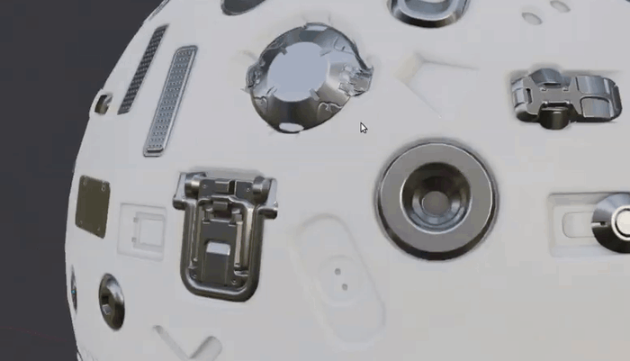

What is DECALmachine?
Gumroad | Blender Market - Blender Artists | Polycount - Youtube - Twitter - Patreon - eMail
DECAlmachine 2.0 - introducing new export capabilities with Atlasing and deep Trim Sheet support
cover image: Strikebreaker - designed and built by Alexander Lortkipanidze - Artstation, Twitter
DECALmachine is a blender addon, which through mesh Decals, allows for surface detailing in a very non-committal, non-destructive, UV-less way. As such it represents an alternative approach to hard surface texturing.
In addition DECALmachine has deep Trim Sheet support, and supports Atlasing, as well as Baking to facilitate exporting to game engines like Unity, Unreal Engine etc.
Decals can be projected, sliced, created from grease pencil or edges. They can be material matched, and you can easily create your own.
Trims can be easily placed, cut, manipulated or removed - all directly in the 3D view.
Read on below for an overview of DECALmachine's tools and concepts.
Keep in mind
The focus of DECALmachine is speed and flexibility in terms of Design and Detailing. Depending on how far you intend to take your designs, and especially if you, intend to use complex shader node setups or do complex texturing such as weathering, floating mesh decals might not be the best workflow, unless you are targeting a deferred rendering solution with mesh decal support, which allows for selective channel blending, instead of just alpha blending as in Blender's Eeevee and Cycles.
Support
Attention
If you need to get in touch with me to report an error, report tool misbehavior or have another problem READ THIS FIRST.
Resources
Learn what's new here, or in the changelog for a condensed version.
For installation help, see the Installation page.
Have questions or problems? See the FAQ.
To discuss using DECALmachine, please use the Blender Artists and polycount threads.
For decal creation, jump to Decal Creation or Trim Sheet Creation.
To export, check out the Export Introduction.
To learn about all of DECALmachine's features and tools, you can either check out this playlist on youtube, or better - access those same videos, but in context and with additional information through the sidebar to the left.
Features
- quick and precise raycast-based Decal insertion
- easily select Decals by parent object or by type
- automatic material matching, parenting, normal transfer
- two manual texture matching approaches
- automatically organize Decals in collections
- advanced Decal materials using emission, transparency and transmission
- unlimited decal libraries + flexible asset loader layout
- library visibility management and preset access from the 3d view
- create all four Decal types directly in blender, including batch creation of Info Decals from folders of images
- quickly adjust height, object or UV rotation, panel width and type, and much more using the convenient modal adjust tool
- enforce default settings scene-wide and change them quickly in the DECALmachine panel in the sidebar
- store Decal textures on disk or directly in the blend file
- place Decals on flat surfaces and project or shrinkwrap them on curved ones
- slice Decal panel strips "boolean-style"
- or create them from grease pencil strokes or edge selections
- use Panel Decals to cut the underlying mesh
- benefit from parallax adding convincing depth to normal mapped Decals, even in realtime in Blender's Eevee viewport
- retain sharp details at all scales, independent of texture resolution, via UV-less object based detailing
- take advantage of Decals being objects, by using modifiers like mirror and array
- join and split Decals completely non-destructively to stay organized
- hide Decal materials (incl. in Batch Ops and Hard Ops), textures and node groups to keep Blender clean
- 3 export approaches:
- create and use Decal Atlases to efficiently export to deferred rendering engines like Unity HDRP, Unreal Engine etc.
- utilize Trim Sheet detail to export anywhere, even forward rendering engines like Unity URP
- bake Decals to their parent object's UV space (not recommended due to unresolved Blender issues)
- create Trim Sheets from existing texture sheets, or from Decal Atlases
- place trims or remove them - directly in the 3d view in edit mode
- cut trims into the mesh from oject mode using Trim decals
- change, rotate, move and scale trims at any time
- additional UV tools like Quad Unwrap, Box Unwrap, Mirror Trim and Stitch
- 109 Decals, 64 Trim Decals, 1 Trim Sheet and 2 Atlases included
- 7 example blend files to study
- best documentation in the business
Overview

With DECALmachine you can avoid getting bogged down with technicalities and monotonous, laborious clean up work related to mesh topology when adding detail to your models.
Instead you can just place your details, re-arrange them at any time, project them on curved surfaces or explore paneling, graphics, logos etc.
DECALmachine's Decal tool set is in essence object-based, UV-less texturing.
Learn more about what a decal actually is and how it works.

This hard surface detailing workflow is incredibly fast and versatile, very easy to handle and manipulate, without committing to any decisions, making it a fantastic choice for 3d concept design workflows.
DECALmachine can be used on its own, or to complement other hard surface workflows, such as a
bevel and boolean based approach used by HardOps and BoxCutter or the classic subdivision surface approach.
It all works, it will even work on models exported from Solids/NURBS/CAD based tools such as MoI3D or Fusion 360!
The beauty of decals is, your results are not limited by texture sizes - details remain sharp, even when seen from up-close, which can be especially important for game artists.
Game artists also require a way to get Decals out of Blender and into Unity, Unreal Engine etc, and DECALmachine offers 3 approaches to do so.

These export approaches are Atlasing, Trim Sheets and Baking.
While a Decal Atlas would be used in a deferred render pipeline with Decal shaders, Trim Sheets and Baking can be used in forward rendering too.
Of the last two, Trim Sheets stand out, because they offer almost all the same benefits Decals offer, especially in terms of visual quality (over baked decals or textures in general).

To work effortlesly with Trim Sheets, DECALmachine offers a suite of Trim UV tools, that can be used directly from the 3D view.
In addition to the various tools to simplify and automate working with mesh Decals and Trim Sheets, DECALmachine also supplies 109 Decals, 1 Trim Sheet with its 64 Trim Decals, and 2 Atlases - ready to be used.
You are of course in no way limited by what DECALmachine provides. You can create your own Decals and Trim Sheets directly in Blender.
The documentation also hosts a list of 3rd party Decal packs.